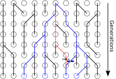
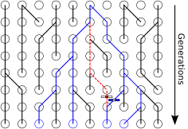

Why study bacterial phylogenetics?
- Bacteria play important rols (both positive and negative) in the health of animals and plants.
- Many bacteria possess interesting and expermimentally accessible evolutionary dynamics.
- Bacterial genomes are measurably evolving over
relatively short study periods.
 Drummond & Rambaut, TIEE (2003)
Drummond & Rambaut, TIEE (2003)


Rainey & Travisano, Nature (1998)


 
